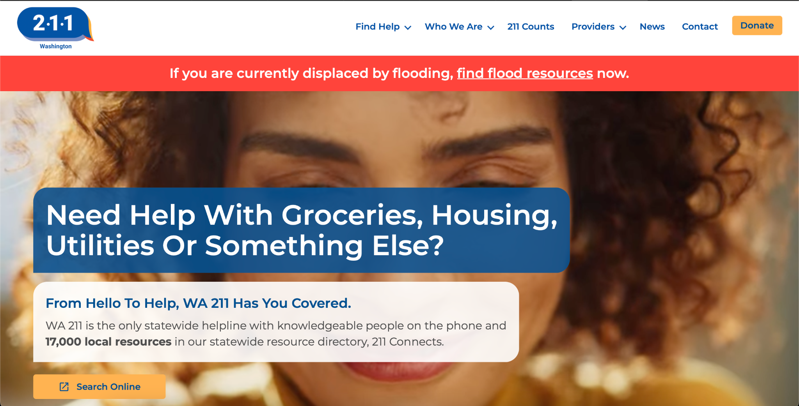
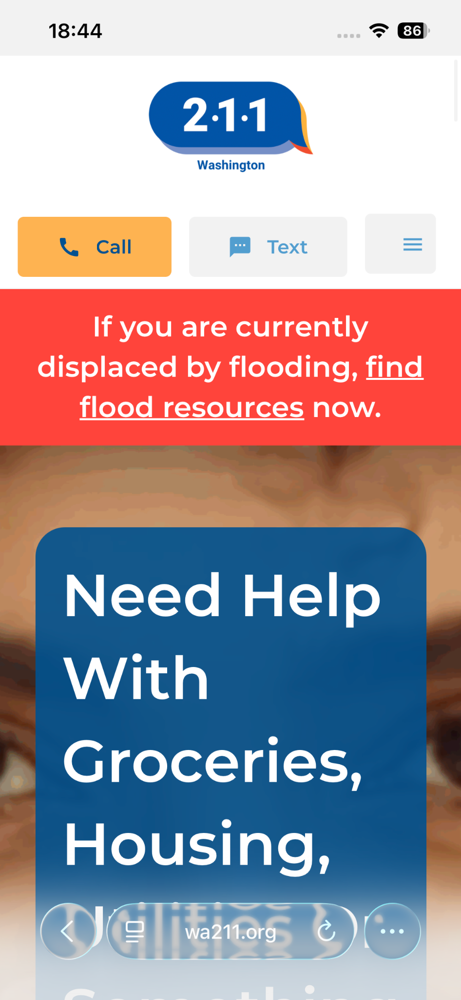
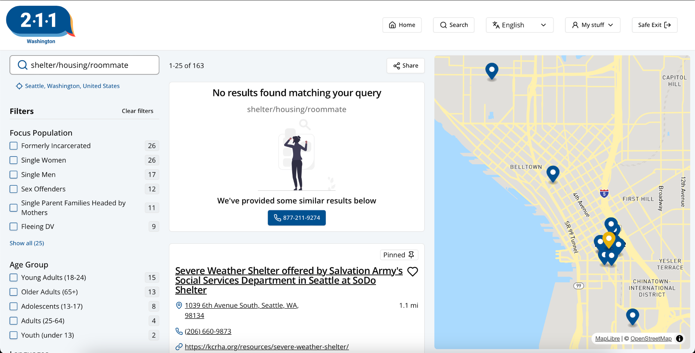

A usability study with individuals with Traumatic Brain Injury (TBI) revealed critical navigation and search-relevance failures on Washington 211's housing resource site — where users in crisis were choosing to abandon the site and call in instead. I led research design and execution end-to-end, adapting every phase to the population's needs; WA211 acknowledged the findings, with one team member confirming the search-discoverability fix as a known issue.
4-person team · WA211 and DSHS informed the study design
Feedback here will inform future mobile app development
Proxy for broader cognitive & physical accessibility needs
Website needs to carry more of the load
How does WA211's information architecture and UI elements enhance or deter usability for users with TBI?
How does the website's navigation structure and visual hierarchy affect the ability of users with TBI to locate specific services without becoming distracted or overwhelmed?
Explore the website's information architecture and key navigation points to understand how it currently serves user needs.
How does the website support task completion for finding crisis resources for users with TBI?
Uncover pain points and difficulties users with TBI encounter when searching for resources and vital services.
Which specific elements on the WA211 directory contribute most to cognitive friction or fatigue for individuals with TBI?
Formulate a list of usability issues and provide actionable recommendations to mitigate and address them.
40 screened → 14 scheduled → 6 completed — individuals with TBI, 1 withdrew mid-session
Remotely via Zoom — scoped for laptops & PCs
+ Mobile deviceIndividuals with TBI served as a proxy population for broader cognitive and physical accessibility needs — common impacts include memory loss, fatigue, light sensitivity, and reduced processing speed, all of which directly shaped session length, task design, and data collection.
What We Avoided Participant-facing methods only (consultation, screener, usability study)
Each finding below is paired with the fix it drove — the causal link from what we observed to what we recommended.
Users could not find where to start their search. The primary search function required a non-standard 3-step path, buried in a visually busy, low-contrast homepage.


After successfully starting a search, results didn't match what participants were looking for — including out-of-state listings for searches explicitly filtered to Washington locations.

"Now, it says Bellingham, Washington, right below the housing apartments. Why am I getting one in San Diego?" — P4, study participant
WA211 acknowledged the search-discoverability finding directly — a team member confirmed it as a known issue on their end, validating the recommendation to move search into the global header.
The search relevance/irrelevant-results finding was acknowledged as critical by the client, though follow-through on implementation was not confirmed after the engagement ended.